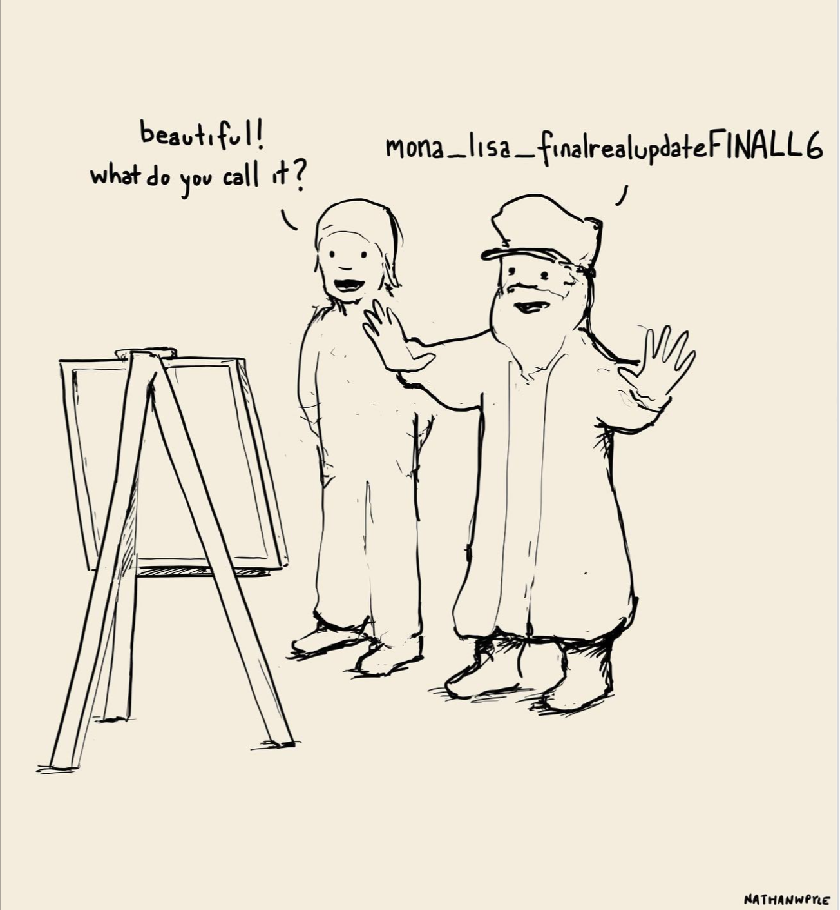

3 Use a clear layout structure¶
Motivation¶
A well-defined, standard project structure means that a newcomer can begin to understand an analysis without digging in to extensive documentation. It also means that they don't necessarily have to read 100% of the code before knowing where to look for very specific things.
Well organized code tends to be self-documenting in that the organization itself provides context for your code without much overhead. People will thank you for this because they can:
- Collaborate more easily with you on this analysis
- Learn from your analysis about the process and the domain
- Feel confident in the conclusions at which the analysis arrives
use meaningful names
 image courtesy of Nathan W Pyle
Use directory hierarchy¶
Some proposed basic suggestions are:
-
to have a README file at the root of the project where a user can find out more about the project in hand. Perhaps also the set of commands needed to run an analysis script.
-
There should be separate directories for the analysis inputs, code itself & the outputs. This will also help at a later point as it will make data breaches less likely.
-
There needs to be a separate directory for ‘ad hoc’ exploratory code/notebooks (like the ones discussed in a previous section) so that they don’t interfere in any way with the main code.
What to include on a README file?¶
When working on a collaborative or open coding project, it’s good practice to describe an overview of your project in a README file. This allows users or developers to grasp the overall goal of your project. As well as a description of the project, it might include examples using your code or references to other associated projects. This file can be any text type, including .txt, .md,
We suggest the following for a good README:
-
Short statement of intent
-
Longer description describing the problem that your project solves and how it solves it
-
Basic installation instructions or link to installation guide
-
Example usage
-
Links to related projects
Use meaningful folder/file names¶
A very detailed example of how a project could look (example for a Python project)
├── LICENSE
├── .gitignore <- files that should not be commited to a repo
├── README.md <- The top-level README
├── data
│ ├── external <- Data from third party sources.
│ ├── interim <- Intermediate data that has been transformed.
│ ├── processed <- The final, canonical data sets for modeling.
│ └── raw <- The original, immutable data dump.
│
├── docs
│
├── models <- Trained and serialized models,model predictions,or model summaries
│
├── adhocnotebooks <- Jupyter notebooks. Naming convention is a number (for ordering),
│ the creator's initials, and a short `-` delimited description,
│ e.g. 1.0-jqp-initial-data-exploration`.
│
├── references <- Data dictionaries, manuals, and all other explanatory materials.
│
├── reports <- Generated analysis as HTML, PDF, LaTeX, etc.
│ └── figures <- Generated graphics and figures to be used in reporting
│
├── src <- Source code for use in this project.
├── __init__.py <- Makes src a Python module if needed
│
├── data <- Scripts to download or generate data
│ └── make_dataset.py
│
├── features <- Scripts to turn raw data into features for modeling
│ └── build_features.py
│
├── models <- Scripts to train models and then use trained models to make
│ │ predictions
│ ├── predict_model.py
│ └── train_model.py
│
└── visualization <- Scripts to create exploratory and results oriented visualizations
└── visualize.py
Proposed Python helper¶
There is a project that creates a folder structure for python projects called cookiecutter
A suggested BOLD solution is that we can create a BOLD cookiecutter template that every analyst can use by
typing cookiecutter BOLD-Template and then can provide the agreed upon directories of a starting slate
We can agree on what will be needed in a discusion via the Github Issues interface
Proposed R helper¶
Similarly for R: projecttemplate
According to its documentation ProjectTemplate is a system for automating the thoughtless parts of a data analysis project:
Besides a full project layout it offers that is created by default, it is also possible to create a minimal project structure that only contains the mandatory directories and files. This can be created using create.project(template='minimal'), and results in the following structure:
├── project
├── cache
├── README.md <- The top-level README
├── data
├── config
│ └── global.dcf
├── munge
│ └── 01-A.R
├── src
│ └── eda.R
It is recommended to start with this simple template and to change it then to taste.